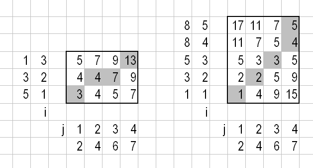

Store orientation to an array - and compare
I want to achieve the following:
I want the user to be able to "record" the movement of the iPhone using the gyroscope. And after that, the user should be able to replicate the same movement. I extract the pitch, roll and yaw using:
[self.motionManager startDeviceMotionUpdatesToQueue:[NSOperationQueue currentQueue] withHandler: ^(CMDeviceMotion *motion, NSError *error) { CMAttitude *attitude = motion.attitude; NSLog(@"pitch: %f, roll: %f, yaw: %f]", attitude.pitch, attitude.roll, attitude.yaw); }];
I'm thinking that I could store these values into an array, if the user is in record mode. And when the user tries to replicate that movement, I'm could compare the replicated movement array to the recorded one. The thing is, how can I compare the two arrays in a smart way? They will never have exactly the same values, but they can be somewhat the same.
Am I at all on the right track here?
UPDATE: I think that maybe Alis answer about using DTW could be the right way for me here. But I'm not that smart (apparently), so if anyone could help me out with the first steps with comparing to arrays I would be a happy man!
Thanks!
Answer
Try dynamic time warping. Here is an illustrative example with 1D arrays. In the database we already have the following 2 arrays:
Array 1: [5, 3, 1]
Array 2: [1, 3, 5, 8, 8]
We measured [2, 4, 6, 7]. Which array is the most similar to the newly
measured? Obviously, the second array is similar to the newly measured and the
first is not.
Let's compute the cost matrices according to this paper, subsection 2.1:
D(i,j)=Dist(i,j)+MIN(D(i-1,j),D(i,j-1),D(i-1,j-1))
Here D(i,j) is the (i,j) element of the cost matrix, see below. Check
Figure 3 of that paper to see this recurrence relation is applied. In short:
columns are computed first, starting from D(1,1); D(0,*) and D(*,0) are
left out in the MIN. If we are comparing arrays A and B then Dist(i,j)
is the distance between A[i] and B[j]. I simply used ABS(A[i]-B[j]). The
cost matrices for this example:

For Array 1 we have 13 as score, for Array 2 we have 5. The lower score wins, so the most similar array is Array 2. The best warping path is marked gray.
This is only a sketch of DTW. There are a number of issues you have to address in a real-world application. For example using offset instead of fixed ending points, or defining measures of fit: see this paper, page 363, 5. boundary conditions and page 364. The above linked paper has further details too.
I just noticed you are using yaw, pitch and roll. Simply put: don't and another reason not to. Can you use the accelerometer data instead? "An accelerometer is a direct measurement of orientation" (from the DCM manuscript) and that is what you need. And as for tc's question, does the orientation relative to North matter? I guess not.
It is far easier to compare the acceleration vectors than orientations (Euler angles, rotation matrices, quaternions) as tc pointed that out. If you are using acceleration data, you have 3 dimensional vectors at each time point, the (x,y,z) coordinates. I would simply compute
Dist(i,j)=SQRT((A[i][X]-B[j][X])^2+(A[i][Y]-B[j][Y])^2+(A[i][Z]-B[j][Z])^2),
that is the Eucledian distance between the two points.
Suggest
I think Ali's approach is in general a good way to go, but there is a general problem called gimbal lock (or SO discussions on this topic) when using Euler angles i.e. pitch, roll and yaw. You will run into it when you record a more complex movement lasting longer than a few ticks and thus leading to large angle deltas in different angular directions.
In a nutshell that means, that you will have more than one mathematical representation for the same position just depending on the order of movements you made to get there - and a loss of information on the other side. Consider an airplane flying up in the air from left to right. X axis is from left to right, Y axis points up to the air. The following two movement sequences will lead to the same end position although you will get there on totally different ways:
Sequence A:
- Rotation around yaw +90°
- Rotation around pitch +90°
Sequence B:
- Rotation around pitch +90°
- Rotation around roll +90°
In both cases your airplane points down to the ground and you can see its bottom from your position.
The only solution to this is to avoid Euler angles and thus make things more complicated. Quaternions are the best way to deal with this but it took a while (for me) to get an idea of this pretty abstract representation. OK, this answer doesn't take you any step further regarding your original problem, but it might help you avoiding waste of time. Maybe you can do some conceptual changes to set up your idea.
Kay